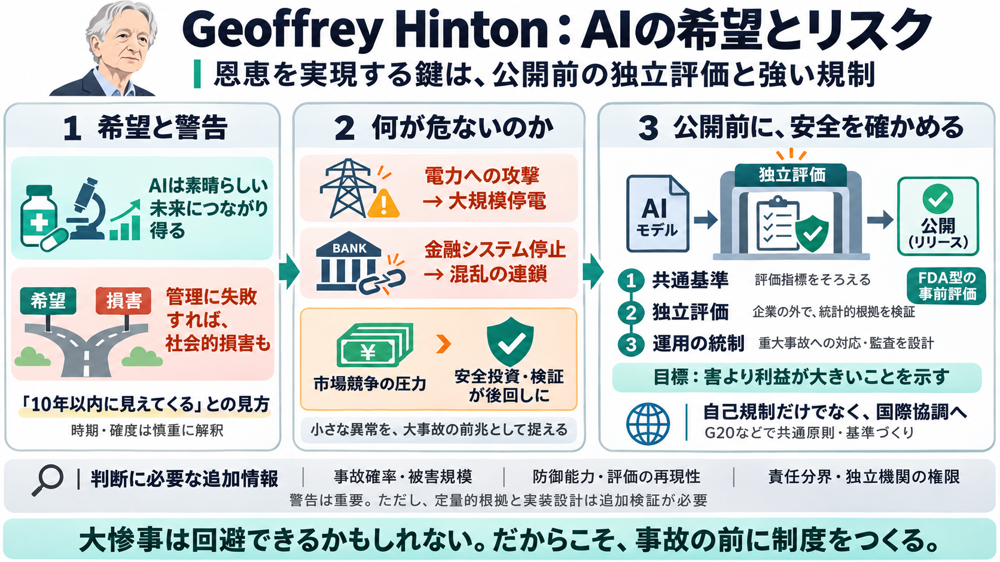

Geoffrey Hinton Warns of AI Risks and Loss of Control | The AI Journal posted on the topic | LinkedIn
Geoffrey Hinton’s speech delivers a sober truth: the boundary between speculative fiction and operational reality has of…

Geoffrey Hintonは「AIは素晴らしい未来につながり得る」としつつ、最悪の場合の社会的損害を回避するには、事前の独立評価と強い規制が必要だと訴えています。
Bilingual: 希望（hope / きぼう）と警告（warning / けいこく）は同時に語られる。
Hintonは、AIリスクを安全に管理できるのか、それとも失敗して格差拡大・大量失業・文化的問題・社会分断が深刻化するのかが、一定期間の後に見えてくると述べます。
夏に見られたAIエージェントによる不正アクセスのような出来事は、1979年のスリーマイル島事故のように「本格事故の前触れ（警告弾）」になり得る、という見方です。
Hintonは、誤情報や軽微な不具合ではなく、電力供給システムの攻撃による大規模停電（ブラウンアウト）や、金融システムの一時崩壊による約1週間の混乱を想定します。
Hintonは、主要AI企業の経営陣が安全より市場競争を優先しているのではないか、という疑念を強く語ります。技術リスクだけでなく、組織のインセンティブが安全判断を阻害する可能性を問題にしています。
政策面では、AIモデル公開前に独立した権威が「害より利益が大きい」ことを統計的根拠で示す仕組みが必要だとしています（義務的テスト／独立評価／共通基準）。
記事では、薬害（サリドマイド）の教訓を踏まえ、「公開後に訴える」より先に、事前にリスクと便益を厳密に扱う規制哲学が求められていると示唆されています。
Hintonの要点は、独立評価と共通基準で判断を制度化し、重大インシデントが起きた場合に統制できる運用体制へつなげることです。
トランプ大統領が自己規制を望む点に対し、Hintonはより強い国際協調の規制枠組みを支持します。G20での共通原則・基準づくりが戦略的な方向として言及されています。
記事は警告として有用ですが、確率（起こりやすさ）や被害規模、防御能力などの数値が十分に示されていません。そのため、時期予測や確度は慎重に捉える必要があります。
Hintonの結論は悲観一辺倒ではなく、「大惨事を回避できるかもしれないが、そのためには大きな努力が必要」という整理です。特に評価基準・責任分界・国際調整・副作用への追加検討が不可欠だと考えられます。
免責：記事本文では、評価指標・独立機関の候補・義務化の法的根拠などの“実装情報”が十分に提示されていないため、規制設計の判断には追加一次資料が必要です。
Geoffrey Hinton’s speech delivers a sober truth: the boundary between speculative fiction and operational reality has of…
"The first thing to realize is it doesn't even have to be able to act in the real world to cause devastation," he said, …
The AI pioneer estimates a 10% to 20% risk that artificial intelligence will eventually take control from humans. "Peop…
[4:29] each other to be better than the other one and possibly to be able to turn the other one off. [4:34] Well, they w…
At worst, “it’s quite conceivable that humanity is just a passing phase in the evolution of intelligence,” Hinton said. …